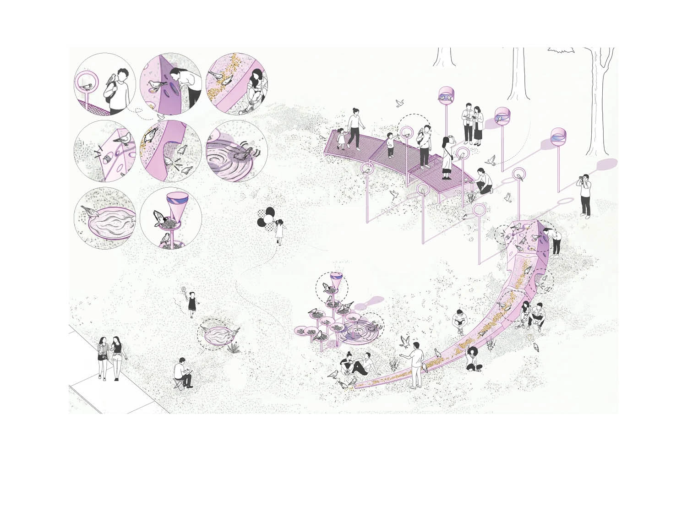
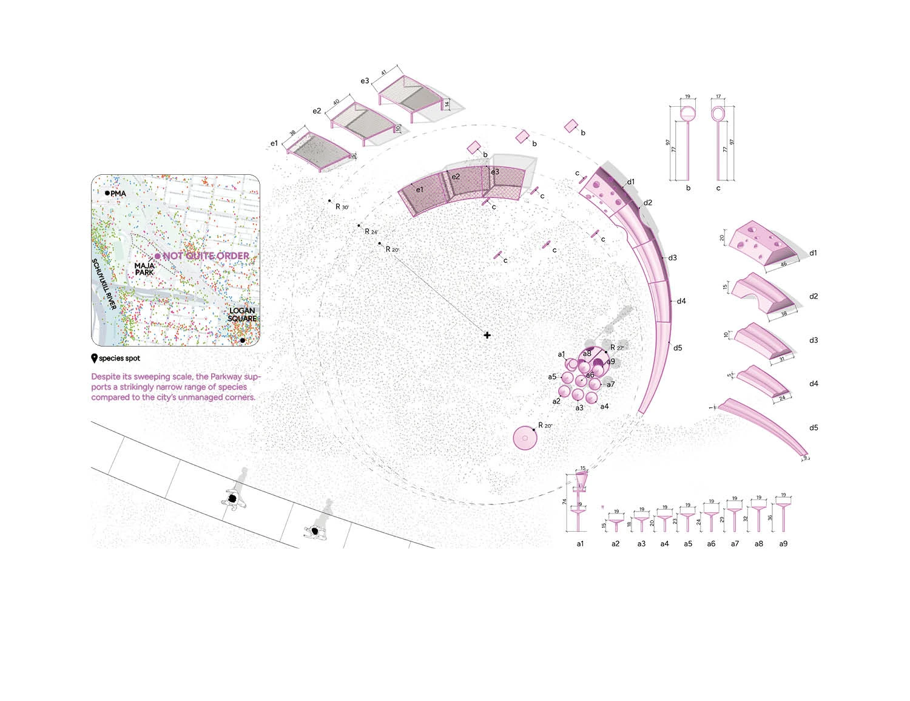

- Location
- Maja Park, Benjamin Franklin Parkway, Philadelphia, United States
- Year
- 2026
- Type
- Public art proposal
- Design team
- Jiewen Hu, Zicheng (Kai) Zhao

Not Quite Order
Sculptural perches, feeders, sand baths, and water basins invite birds into the Benjamin Franklin Parkway, introducing ecological diversity and new ways for people and other species to share public space.
Project details
Project statement
For decades, the Benjamin Franklin Parkway—the city’s most monumental corridor—has projected a carefully maintained image of civic perfection. Its classical architecture, regimented rows of trees, and expansive, manicured lawns communicate a clear message: dignity through order. Within this frame, plants are treated as static design elements rather than living systems—green surfaces that stabilize a grand, controlled vision. Yet, despite its sweeping scale, the Parkway supports a strikingly narrow range of species compared to the city’s unmanaged corners. It is a space that does not merely look controlled; it subtly implies behavior, defining who—and what—is expected to belong.
To foster a more inclusive public realm, the proposal broadens the Parkway’s pristine image by introducing a layer of ecological messiness. Birds are invited as active agents whose movements and daily rituals gradually bring spontaneous diversity into the landscape, loosening its long-standing monocultural stability. Along the curving path rising from Maja Park, a series of sculptural installations reimagines familiar bird infrastructure—perches, feeders, sand baths, and water basins—as vibrant, tactile objects made of tabby concrete and painted steel.
These interventions are choreographed to foster new modes of noticing and sharing space with birds. Some elements sit low enough to encounter while sitting in the grass; others align at eye level; others draw attention upward to perching points above. These shifts in height and distance change how visitors move, pause, and look—briefly asking people to experience the Parkway from a non-human perspective. By doing so, the installation proposes a subtle reorientation of the parkway's identity. Rather than dissolving its historical grandeur, the project introduces a layer of ecological vitality that softens its rigidity. It reframes the Parkway not as a perfected image to be defended, but as a living public landscape capable of holding multiple species, multiple publics, and a more expansive idea of belonging.


